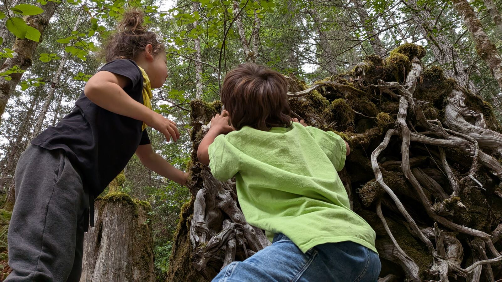
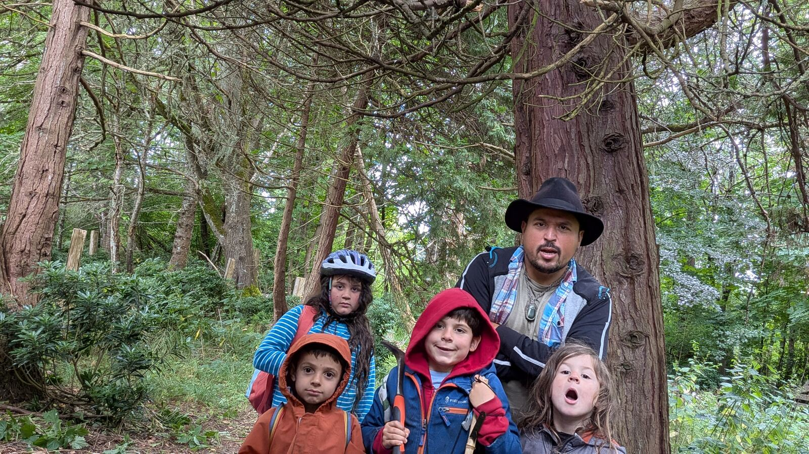
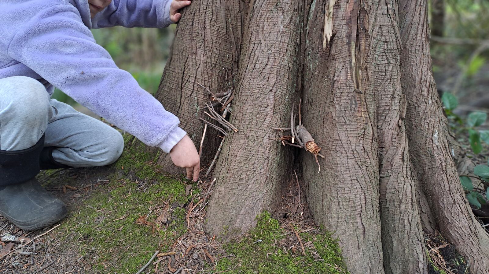
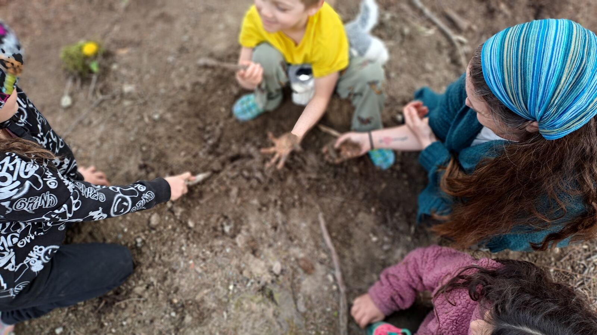

An invitation for parents, adults, and young adults with a real commitment to creating spaces for children and families to connect in nature.
Is This You?
If part of you already wants to help hold a space like this, for your own children or for the children of your community, that's worth listening to. This is an invitation, not a requirement.
How It Works
There's no single way in. Depending on your experience and time, you might start as an apprentice learning alongside a mentor, co-mentor a specific activity or age group, or eventually hold your own corner of a Friday.
In practice, it means showing up on Fridays, practicing spaceholding alongside other mentors, and slowly taking on more responsibility for the space as you're ready for it.
Mentors in Action




Next Step
If this is calling you, reach out. We'll talk about where you're at and what a good next step looks like for you.